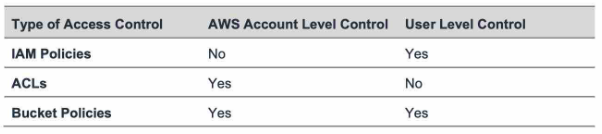
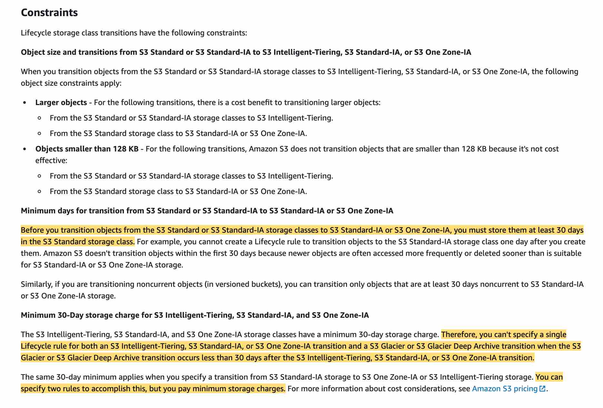

Amazon S3
Oject based storage
You can use Amazon S3 to host a static website. On a static website, individual web pages include static
content. They might also contain client-side scripts. To host a static website on Amazon S3, you configure an
Amazon S3 bucket for website hosting and then upload your website content to the bucket.
When you configure
a bucket as a static website, you must enable website hosting, set permissions, and create and add an index
document. Depending on your website requirements, you can also configure redirects, web traffic logging, and a
custom error document.
Distributing the static content through S3 allows us to offload most of the network usage to S3 and free up
our applications running on ECS.
S3 Bucket Policies
Bucket policies in Amazon S3 can be used to add or deny permissions across some or all of the objects within a single bucket. Policies can be attached to users, groups, or Amazon S3 buckets, enabling centralized management of permissions. With bucket policies, you can grant users within your AWS Account or other AWS Accounts access to your Amazon S3 resources.
You can further restrict access to specific resources based on certain conditions. For example, you can restrict access based on request time (Date Condition), whether the request was sent using SSL (Boolean Conditions), a requester’s IP address (IP Address Condition), or based on the requester's client application (String Conditions). To identify these conditions, you use policy keys.
S3 Versioning
Versioning is a means of keeping multiple variants of an object in the same bucket. You can use versioning to preserve, retrieve, and restore every version of every object stored in your Amazon S3 bucket. Versioning-enabled buckets enable you to recover objects from accidental deletion or overwrite.
Once you version-enable a bucket, it can never return to an unversioned state. Versioning can only be suspended once it has been enabled.
Enable MFA delete on the bucket
To provide additional protection, multi-factor authentication (MFA) delete can be enabled. MFA delete requires secondary authentication to take place before objects can be permanently deleted from an Amazon S3 bucket.
S3 storage classes
S3 Storage Classes can be configured at the object level, and a single bucket can contain objects stored across S3 Standard, S3 Intelligent-Tiering, S3 Standard-IA, and S3 One Zone-IA.
S3 Standard
Store data in a minimum of three Availability Zones (AZs)
No Minimum capacity charge per object
No
Minimum storage duration charge
No Retrieval charge
S3 Intelligent-Tiering
Automatic cost savings for data with unknown or changing access patterns
No Minimum capacity charge per
object
No Minimum storage duration charge
No Retrieval charge
S3 Standard-IA
30 days Minimum storage duration charge
128KB Minimum capacity charge per object
Retrieval charge per GB
S3 One Zone-IA
S3 One Zone-IA is for data that is accessed less frequently, but requires rapid access when needed. S3 One
Zone-IA stores data in a single AZ and costs 20% less than S3 Standard-IA. S3 One Zone-IA is
ideal for customers who want a lower-cost option for infrequently accessed and re-creatable data but do not
require the availability and resilience of S3 Standard or S3 Standard-I. S3 One Zone-IA offers the same high
durability, high throughput, and low latency of S3 Standard, with a low per GB storage price and per GB
retrieval fee.
90 days Minimum storage duration charge
128KB Minimum capacity charge per object
Retrieval charge per GB
S3 Glacier Instant retrieval
90 days Minimum storage duration charge
128KB Minimum capacity charge per object
Retrieval charge per
GB
S3 Glacier Flexible retrieval
90 days Minimum storage duration charge
48KB Minimum capacity charge per object
Retrieval charge per GB
S3 Glacier Deep Archive
180 days Minimum storage duration charge
48KB Minimum capacity charge per object
Retrieval charge per
GB
Lifecycle policy
Automatically transition objects between storage classes without any application changes: The minimum storage duration is 30 days before you can transition objects from S3 Standard to S3 One Zone-IA.
S3 Read-after-write consistency
Delivers strong read-after-write consistency automatically, without changes to performance or availability, without sacrificing regional isolation for applications, and at no additional cost. After a successful write of a new object or an overwrite of an existing object, any subsequent read request immediately receives the latest version of the object. S3 also provides strong consistency for list operations, so after a write, you can immediately perform a listing of the objects in a bucket with any changes reflected. Strong read-after-write consistency helps when you need to immediately read an object after a write. To summarize, all S3 GET, PUT, and LIST operations, as well as operations that change object tags, ACLs, or metadata, are strongly consistent. What you write is what you will read, and the results of a LIST will be an accurate reflection of what’s in the bucket.
S3 Copy Data
Copy data from the source bucket to the destination bucket using the aws S3 sync command The aws S3 sync command uses the CopyObject APIs to copy objects between S3 buckets. The sync command lists the source and target buckets to identify objects that are in the source bucket but that aren't in the target bucket. The command also identifies objects in the source bucket that have different LastModified dates than the objects that are in the target bucket. The sync command on a versioned bucket copies only the current version of the object—previous versions aren't copied. By default, this preserves object metadata, but the access control lists (ACLs) are set to FULL_CONTROL for your AWS account, which removes any additional ACLs. If the operation fails, you can run the sync command again without duplicating previously copied objects. You can use the command like so: aws s3 sync s3://DOC-EXAMPLE-BUCKET-SOURCE s3://DOC-EXAMPLE-BUCKET-TARGET Set up S3 batch replication to copy objects across S3 buckets in different Regions using S3 console S3 Batch Replication provides you a way to replicate objects that existed before a replication configuration was in place, objects that have previously been replicated, and objects that have failed replication. This is done through the use of a Batch Operations job.
You should note that batch replication differs from live replication which continuously and automatically replicates new objects across Amazon S3 buckets. You cannot directly use the AWS S3 console to configure cross-Region replication for existing objects. By default, replication only supports copying new Amazon S3 objects after it is enabled using the AWS S3 console. Replication enables automatic, asynchronous copying of objects across Amazon S3 buckets. Buckets that are configured for object replication can be owned by the same AWS account or by different accounts. Object may be replicated to a single destination bucket or multiple destination buckets. Destination buckets can be in different AWS Regions or within the same Region as the source bucket. If you want to enable live replication for existing objects for your bucket, you must contact AWS Support and raise a support ticket. This is required to ensure that replication is configured correctly.
S3 Transfer Acceleration
You pay only for transfers that are accelerated Bucket-level feature that enables fast, easy, and secure transfers of files over long distances between your client and an S3 bucket. S3TA improves transfer performance by routing traffic through Amazon CloudFront’s globally distributed Edge Locations and over AWS backbone networks, and by using network protocol optimizations.
Retention Period
A retention period protects an object version for a fixed amount of time.
When you apply a retention period to an object version explicitly, you specify a Retain Until Date for the
object version. Amazon S3 stores the Retain Until Date setting in the object version's metadata and
protects the
object version until the retention period expires.
When you use bucket default settings, you don't specify a Retain Until Date. Instead, you specify a
duration, in
either days or years, for which every object version placed in the bucket should be protected. When you
place an
object in the bucket, Amazon S3 calculates a Retain Until Date for the object version by adding the specified
duration to the object version's creation timestamp. It stores the Retain Until Date in the object version's
metadata. The object version is then protected exactly as though you explicitly placed a lock with that
retention period on the object version.
Like all other Object Lock settings, retention periods apply to individual object versions. Different versions of a single object can have different retention modes and periods.
Legal holds
With Object Lock you can also place a legal hold on an object version. Like a retention period, a legal hold prevents an object version from being overwritten or deleted. However, a legal hold doesn't have an associated retention period and remains in effect until removed. Legal holds can be freely placed and removed by any user who has the s3:PutObjectLegalHold permission. For a complete list of Amazon S3 permissions, see Actions, resources, and condition keys for Amazon S3. Legal holds are independent from retention periods. As long as the bucket that contains the object has Object Lock enabled, you can place and remove legal holds regardless of whether the specified object version has a retention period set. Placing a legal hold on an object version doesn't affect the retention mode or retention period for that object version. For example, suppose that you place a legal hold on an object version while the object version is also protected by a retention period. If the retention period expires, the object doesn't lose its WORM protection. Rather, the legal hold continues to protect the object until an authorized user explicitly removes it. Similarly, if you remove a legal hold while an object version has a retention period in effect, the object version remains protected until the retention period expires. To use Object Lock, you must enable it for a bucket. You can also optionally configure a default retention mode and period that applies to new objects that are placed in the bucket. For more information, see Configuring S3 Object Lock using the console.
For S3 Standard storage, the pricing is $0.023 per GB per month.
Manage the Encryption Keys
Server-Side Encryption with Amazon S3-Managed Keys (SSE-S3)
Each object is encrypted with a unique key.It encrypts the key itself with a root key that it regularly rotates. strongest block ciphers available, 256-bit Advanced Encryption Standard (AES-256) GCM, to encrypt your data. For objects encrypted prior to AES-GCM, AES-CBC is still supported to decrypt those objects.
Server-Side Encryption with KMS keys Stored in AWS Key Management Service (SSE-KMS)
Additional benefits and charges for using this service - Separate permissions for the use of a KMS key that
provides added
protection against unauthorized access of your objects in Amazon S3.
Audit trail that shows when your
KMS key was used and by whom.
You can create and manage customer
managed keys or use AWS managed keys that are unique to you, your service, and your Region.
Server-Side Encryption with Customer-Provided Keys (SSE-C)
You manage the encryption keys and Amazon S3 manages the encryption, as it writes to disks, and decryption, when you access your objects.
Optimizing Amazon S3 performance
You can use prefixes to organize the data that you store in Amazon S3 buckets. A prefix is a string of
characters at the beginning of the object key name. A prefix can be any length, subject to the maximum length of
the object key name (1,024 bytes). You can think of prefixes as a way to organize your data in a similar way to
directories. However, prefixes are not directories.
Your applications can easily achieve thousands of transactions per second in request performance when uploading
and retrieving storage from Amazon S3. Amazon S3 automatically scales to high request rates. For example, your
application can achieve at least 3,500 PUT/COPY/POST/DELETE or 5,500 GET/HEAD requests per second per
partitioned prefix. There are no limits to the number of prefixes in a bucket. You can increase your read or
write performance by using parallelization. For example, if you create 10 prefixes in an Amazon S3 bucket to
parallelize reads, you could scale your read performance to 55,000 read requests per second. Similarly, you can
scale write operations by writing to multiple prefixes. For more information about creating and using prefixes,
see Organizing objects using prefixes.
Some data lake applications on Amazon S3 scan millions or billions of objects for queries that run over
petabytes of data. These data lake applications achieve single-instance transfer rates that maximize the network
interface use for their Amazon EC2 instance, which can be up to 100 Gb/s on a single instance. These
applications then aggregate throughput across multiple instances to get multiple terabits per second.
Other applications are sensitive to latency, such as social media messaging applications. These applications can
achieve consistent small object latencies (and first-byte-out latencies for larger objects) of roughly 100–200
milliseconds.
Accelerate performance - Want higher transfer rates over a single HTTP connection or single-digit
millisecond
latencies, use Amazon CloudFront or Amazon ElastiCache for caching with Amazon S3.
Additionally, if you want fast data transport over long distances between a client and an S3 bucket, use
Configuring fast, secure file transfers using Amazon S3 Transfer Acceleration. Transfer Acceleration uses the
globally distributed edge locations in CloudFront to accelerate data transport over geographical distances. If
your Amazon S3 workload uses server-side encryption with AWS Key Management Service (SSE-KMS), see AWS KMS
Limits in the AWS Key Management Service Developer Guide for information about the request rates supported for
your use case.
x-amz-server-side-encryption header set
the bucket policy to deny if the PutObject does not have an x-amz-server-side-encryption header set - Amazon S3 encrypts your data at the object level as it writes to disks in AWS data centers, and decrypts it for you when you access it. You can encrypt objects by using client-side encryption or server-side encryption. Client-side encryption occurs when an object is encrypted before you upload it to S3, and the keys are not managed by AWS. With server-side encryption, Amazon manages the keys in one of three ways: 1. Server-side encryption with customer-provided encryption keys (SSE-C). 2. SSE-S3. 3. SSE-KMS. Server-side encryption is about data encryption at rest—that is, S3 encrypts your data at the object level as it writes it to disks in its data centers and decrypts it for you when you access it. As long as you authenticate your request and you have access permissions, there is no difference in the way you access encrypted or unencrypted objects. To encrypt an object at the time of upload, you need to add a header called x-amz-server-side-encryption to the request to tell S3 to encrypt the object using SSE-C, SSE-S3, or SSE-KMS. In order to enforce object encryption, create an S3 bucket policy that denies any S3 Put request that does not include the x-amz-server-side-encryption header. There are two possible values for the x-amz-server-side-encryption header: AES256, which tells S3 to use S3-managed keys, and aws:kms, which tells S3 to use AWS KMS–managed keys.restrict access to content that you serve from Amazon S3 buckets
To restrict access to content that you serve from Amazon S3 buckets, you need to follow the following steps: 1. Create a special CloudFront user called an origin access identity (OAI) and associate it with your distribution. 2. Configure your S3 bucket permissions so that CloudFront can use the OAI to access the files in your bucket and serve them to your users. Make sure that users can’t use a direct URL to the S3 bucket to access a file there.
fetch a byte-range from an object
Using the Range HTTP header in a GET Object request, you can fetch a byte-range from an object, transferring only the specified portion. You can use concurrent connections to Amazon S3 to fetch different byte ranges from within the same object. This helps you achieve higher aggregate throughput versus a single whole-object request. Fetching smaller ranges of a large object also allows your application to improve retry times when requests are interrupted. A byte-range request is a perfect way to get the beginning of a file and ensuring we remain efficient during our scan of our S3 bucket.